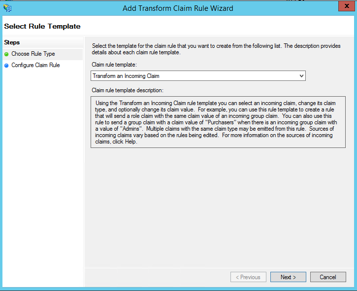
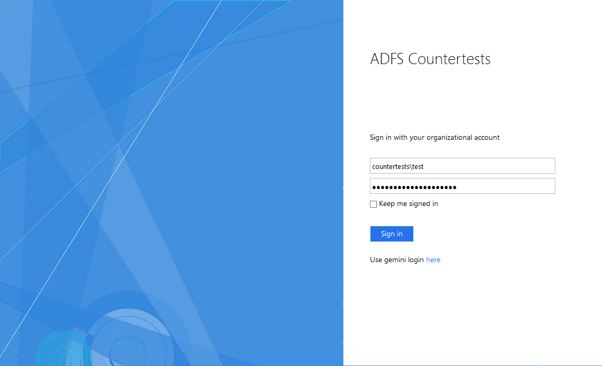
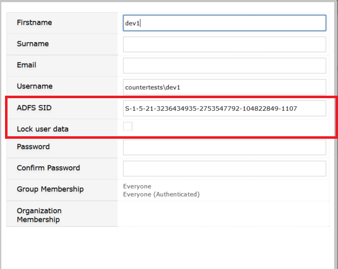

ADFS requires Gemini 6.8.1 or higher
https://countertest.countert.com/gemini/ is not equal to https://countertest.countert.com/Gemini/ and will fail.
Go to: ADFS Management > Trust Relationships > Relying Party Trusts > Add Relying Party Trust and Click Start
Choose Enter data about the relying party manually.
Set the Display name and you can set Notes for this relying party.
Choose ADFS profile.
Click Next.
Click Enable support for the WS-Federation Passive protocol URL and set the Relying party URL.
Click Next.

If all is OK, the Relying party URL will appearin the list. You can add another one with the Add button.
Click Next.
Click Next with Permit all users to access this relying party.
Click Close.
Click Add Rule.

Choose Transform an Incoming Claim.

Set the claim rule name to SID. Choose Primary SID in the Incoming claim type and Outgoing claim type. Click Finish.
Set the claim rule name to Domain/name. Choose Windows account name in the Incoming claim type and Outgoing claim type. Click Finish.
Click Apply.
Using Window PowerShell, you can change the General ADFS sign-in page: for example the company name, company logo, you can add descriptions and links, etc.

Please configure the following, if you want to allow non ADFS configured people to use the original username password based logon screen of Gemini. This will allow users to bypass ADFS authentication.
With the following Windows PowerShell script, add the Gemini Login link to the ADFS Sign-in page. Run the Windows PowerShell script with Administrator elevated privileges.
Replace this value: https://countertest.countert.com/gemini/ to the valid URI of your installed Gemini application in the script and execute:
Set-AdfsGlobalWebContent -SignInPageDescriptionText "<p>Use gemini login <A href='https://countertest.countert.com/gemini/'>here</A></p>"
Example Configuration of Keep Me Signed In KMSI possibility for users in PowerShell
Set-AdfsProperties -EnableKmsi $True
Configuring the lifetime (minutes) for KMSI with the next script
Set-AdfsProperties -KmsiLifetimeMins 1400
Please use regular Gemini upgrade procedures to deploy the application changes to your existing Gemini installation. Your database will automatically be upgraded when starting the new Gemini version.
Go to: Customize > System > Authentications
Check Enable ADFS. Make sure you restart IIS server after modifying this parameter!
Federation metadata URL: Provide Gemini with the URL of the federationmetedata.xml coming from your ADFS server.
Log errors: We recommend you check this to log ADFS related errors in Gemini System log.
Go to: Customize > People > Users
When ADFS is Enabled the User form will show 2 new fields for ADFS.
Edit users to set all necessary parameters.

ADFS SID: the user account SID in the originating domain
Lock user data: The following data is not updated on the user from domain when checked: e-mail, firstname, surname from ADFS synchrinization.
The ADFS SID field and Username field (format: ADFSDomain\username) must be filled from the source domain to make a successful ADFS authentication.
You can turn ADFS authentication off and on by web server.
In the appSettings section in web.config there is a parameter: gemini.adfsenabled.
If the value is true, or does not exist, ADFS authentication is enabled on this web server for the given gemini site.
Swiching this value to false means gemini ADFS authentication is not enabled on this web server for the given gemini site, even though ADFS Enabled is true in Gemini database.